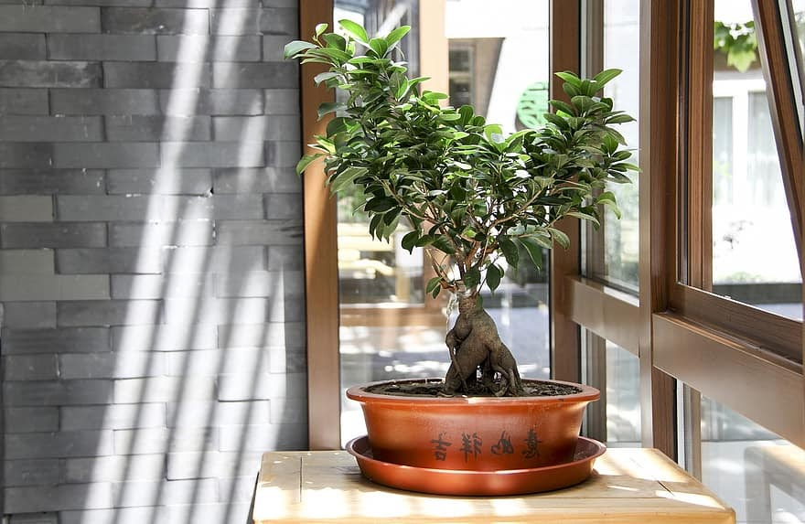
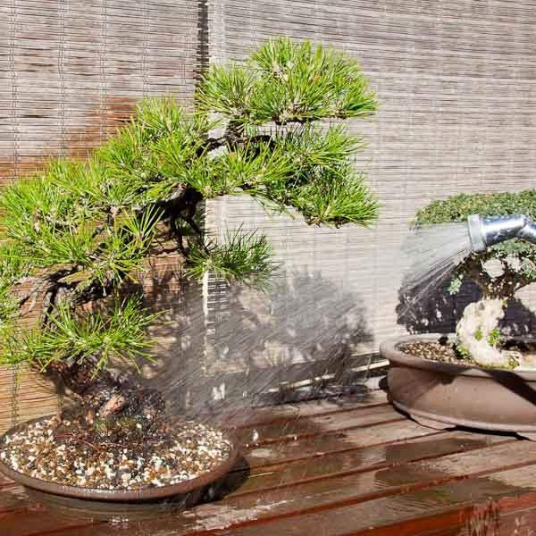
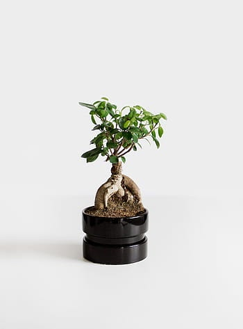
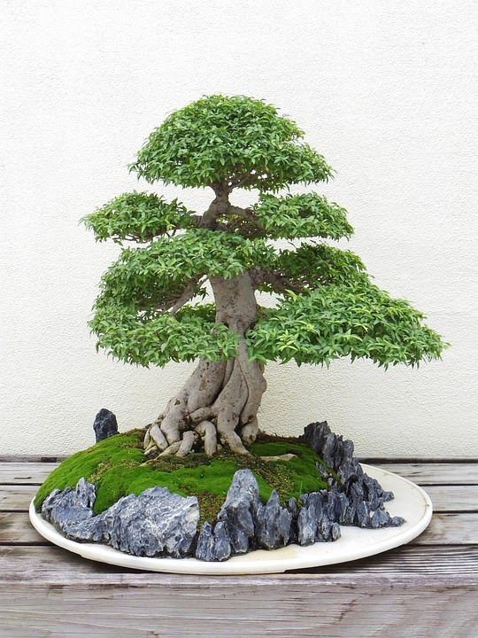

Bonsai plants are very picky and can sometimes be hard to care for.
We have to keep in mind that every plant requires their own special care,
but hopefully with these tips, you'll be more prepared to care for your bonsai.

1. Lighting is Essential for all Plant Growth.
According to Kate Daily, a biologist from California and
writer for dengarden, bonsai trees need at least 5-6 hours
of direct sunlight.

2. Every Plant Needs Water to Survive, and so do Bonsais.
Many experts in plants and bonsai enthusiest, reccomed watering when
the top 1-2inches of soild are dry to the touch. It is also reccomended
that you never water on routine, as bonsai trees are very particular on
when they need to be watered.

3. Plants, Much Like us Grow With Time and Need new Homes to Accomodate.
Generally, it is recommended that you repot your bonsai every one to five years.
It is favorable to repot during the winter as the tree stores a lot of energy and
grows fast when summer begins.

4.To Maintain the Look of the Tree, We Should do Frequent Trimmings .
Trimming is essential for tree growth. it is like getting a hair cut to cut off
split ends to ensure healthy hair growth. This is also where you get to personalize
your tree and truely make it yours.